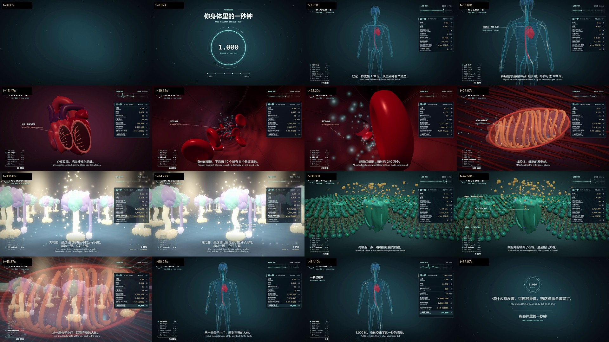
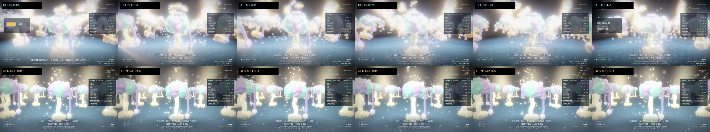
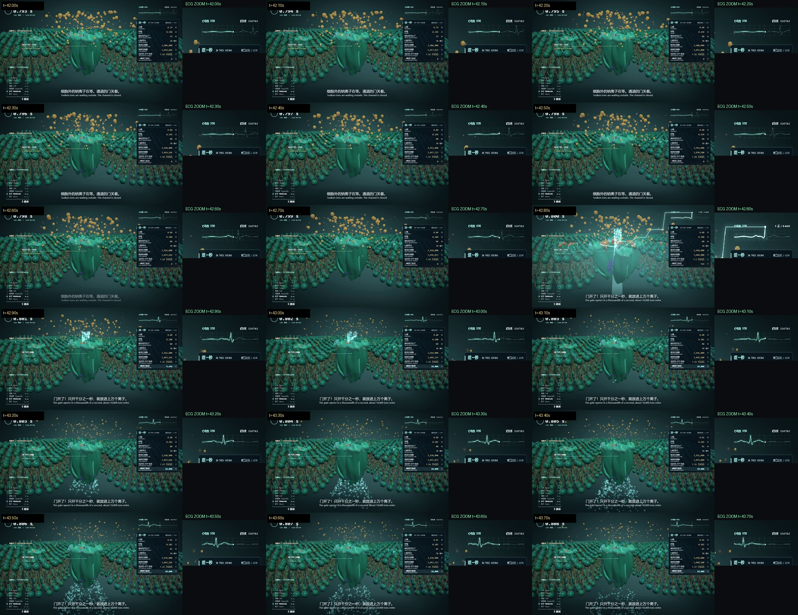

输入参考视频
6.5 秒 · 1280 × 720 · 30 fps · 原声
参考片段展示线粒体内的旋转分子涡轮、发光粒子流、双语字幕和科学仪表。
OMNIALE · WEEK 6
根据 6.5 秒线粒体分子涡轮参考片段，用代码制作完整的多尺度三维科普动画，并程序化合成同步声音。
6.5 秒 · 1280 × 720 · 30 fps · 原声
参考片段展示线粒体内的旋转分子涡轮、发光粒子流、双语字幕和科学仪表。
根据参考片段复现画面风格与运动，用代码合成节拍、心跳及其他同步音效。
改编自 Code2Video-Compass 的 C2VC-0403 V2V 样本，增加程序化音频和声画同步要求。上游标注 CC BY-NC 4.0，评测代码 Apache-2.0。
Sol 6.2 · 初评 · xhigh
交付格式及素材复制检查通过。
58 秒 · 1280 × 720 · 30 fps · AAC 立体声
| 成片章节 | 时间 |
|---|---|
| 一秒钟 / One Second | 0.0–4.4 秒 |
| 把时间放慢 / Time Dilation | 4.4–9.8 秒 |
| 信号与心跳 / Signals and Systole | 9.8–18.5 秒 |
| 氧气接力 / Oxygen Relay | 18.5–28.4 秒 |
| 分子涡轮 / Molecular Turbine | 28.4–37.8 秒 |
| 瞬时开门 / Voltage-Gated Channel | 37.8–45.4 秒 |
| 回到全身 / Return to the Body | 45.4–50.6 秒 |
| 这一秒的清单 / The One-Second Tally | 50.6–55.2 秒 |
| 你身体里的一秒钟 / One Second Inside You | 55.2–58.0 秒 |
| 指标 | 方法 | 原始指标 | 得分 | 运行方式 |
|---|---|---|---|---|
| SA · 序列对齐 | DINOv3 + 子序列 DTW | 0.8949 | 3.99 / 15 | 52.7 秒 · CPU |
| AF · 外观保真 | DreamSim + 约束 DTW | 0.8106 | 14.59 / 20 | 21.1 秒 · CPU |
| MF · 运动保真 | CoTracker3 + 轨迹相似度 | 0.5369 | 12.34 / 25 | 45.6 秒 · CPU |
| IF · 指令遵循 | Qwen3.8 Omni Flash | 0.9231 | 18.46 / 20 | API |
| Code2AV · 声画同步 | 本地信号处理 | 0.9750 | 19.50 / 20 | CPU |
SA、AF、MF 共 60 分，使用本地视觉模型在 CPU 实测共耗时 119.4 秒。IF 为 13 道二元判票，使用 Qwen3.8 Omni Flash API（xhigh，2 fps）；Code2AV 采用音频信号与画面变化检测。
SA：参考与成片按 4 fps 抽帧，用 DINOv3 特征余弦相似度做单调子序列 DTW，找出成片中的对应区间。得分 = 15 × clip((SA−0.48)/0.52) × min(1, 匹配时长/4.5)。
AF：DreamSim 对参考帧和上述匹配区间提取感知特征，约束 DTW 对齐后取 1 减平均特征距离。得分 = 20 × clip((AF−0.30)/0.70)。
MF：CoTracker3 在两段各取 24 帧、最长边 512px，跟踪 20×20 网格。计算可见轨迹的相邻帧位移，比较方向余弦和速度大小比值，以双向最近匹配平均值获得相似度；得分 = 25 × clip((MF−0.30)/0.48) × G，其中 G=min(1,max(SA 归一化值,AF 归一化值)/0.25)。clip 将数值限制在 0–1。
IF：20 × 是的数量/13。Code2AV：四项信号处理分数相加。其中 AV4 的音质部分实际检查峰值、RMS 和静音间隔，评分代码未直接计算 LUFS。
| 序号 | 原始问题 | 判票 | 证据秒数 |
|---|---|---|---|
| 1 | Is the title '你身体里的一秒钟 / One Second Inside You' displayed on screen? | 是 | 0.0, 1.0, 55.0 |
| 2 | Does the stopwatch reach “1.000 s”? | 是 | 4.0, 51.0 |
| 3 | Is the human figure depicted as a standing translucent silhouette? | 是 | 5.0, 12.0, 49.0 |
| 4 | Is the central visual area framed by an on-screen HUD overlay with a telemetry data card positioned on the right side? | 是 | 5.0, 30.0, 51.0 |
| 5 | Is the ECG oscilloscope monitor located in the upper-right section of the frame? | 是 | 5.0, 20.0, 43.0 |
| 6 | Does the opening of the molecular ion channel gates correspond to an electrical spike on the ECG monitor? | 否 | 42.0, 43.0, 44.0 |
| 7 | Do the ATP synthase turbines rotate around their central shafts? | 是 | 28.0, 33.0, 37.0 |
| 8 | Do the ion channel gates visibly transition from a closed state to an open conformation? | 是 | 39.0, 43.0, 44.0 |
| 9 | Does the camera execute a multi-scale zoom-in into microscopic cellular structures followed by a reverse zoom back to the full human silhouette? | 是 | 13.0, 24.0, 38.0, 45.0, 50.0 |
| 10 | Does the initial stopwatch count up from '0.000' to '1.000' in real time before the slowed-down anatomical zoom sequence begins? | 是 | 2.0, 3.0, 4.0, 5.0 |
| 11 | Is the animation rendered in a 3D medical science explainer aesthetic featuring futuristic scientific HUD telemetry overlays? | 是 | 5.0, 30.0, 51.0 |
| 12 | Does the video faithfully reproduce the reference clip's warm-toned mitochondrial environment featuring rotating molecular ATP synthase turbines driven by luminous particles? | 是 | 28.0, 32.0, 36.0 |
| 13 | Does the sequence seamlessly enter the reference clip's ATP synthase scene from the capillary level and subsequently transition onward to the cell membrane ion channel sequence? | 是 | 23.0, 27.0, 38.0, 44.0 |
| 项目 | 得分 | 实测信号 |
|---|---|---|
| AV1 秒表与降速音效 | 5.00 / 5 | 5 次节拍；频谱质心从 1844.7 Hz 降到 196.0 Hz |
| AV2 心跳与电脉冲 | 6.00 / 6 | 5 个低频峰；42.80 秒声画瞬态对齐 |
| AV3 分子涡轮与阶段音色 | 5.00 / 5 | 四阶段 MFCC 平均距离 65.67；片段内有能量和频谱变化 |
| AV4 切镜与音频质量 | 3.50 / 4 | 5 处画面转场峰中 4 处与声音起始峰相差不超过 0.30 秒 |
Windows Codex CLI 0.163.0，NJU Link，联网。实际请求均为 xhigh。
| 模型 | 思考强度 | 耗时 | 实际请求 | 退出状态 |
|---|---|---|---|---|
| Sol 6.2 | xhigh | 40 分 31 秒 | 43 | 0 |

DINOv3 对齐选择了 31.00–32.50 秒的 7 个采样帧来匹配参考的 26 帧。该段视觉相似度 0.8949，但有效持续时间仅 1.5 秒，时长系数为 1/3。实际线粒体段的构图与字幕变化不足，匹配结果集中于中间短区间。
对齐窗口内有明显位移的轨迹数为 52/400，参考为 129/400。镜头视差、粒子流和亮度变化均较弱。MF 与 SA 共用匹配窗口，较短窗口也可能影响运动比较。
科学 HUD、双语排版与布局比较接近。涡轮几何较简化，原参考具有更强的金色光晕、层次和前景变化。
五处主要画面转场峰中四处命中附近声音起始峰，剩余一处未匹配。

Q6 对 ECG 波峰与离子通道开启的时序关系判为否。审计在成片 42.80 秒找到约 120 毫秒的闪光过程，2 fps 可能遗漏。复评将 IF 恢复为 20 分，总分为 70.4155。本页展示冻结初评 68.8770。
